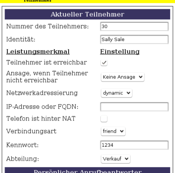
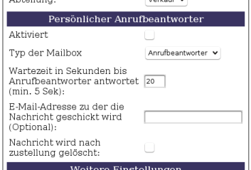
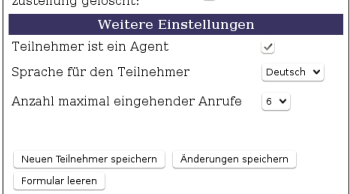

callbuntu-webgui
Archivierte Anleitung
Dieser Artikel wurde archiviert, da er - oder Teile daraus - nur noch unter einer älteren Ubuntu-Version nutzbar ist. Diese Anleitung wird vom Wiki-Team weder auf Richtigkeit überprüft noch anderweitig gepflegt. Zusätzlich wurde der Artikel für weitere Änderungen gesperrt.
Zum Verständnis dieses Artikels sind folgende Seiten hilfreich:
callbuntu-webgui  ist eine Weboberfläche zur Administration gängiger Leistungsmerkmale eines Asterisk-Telefonieservers . Im momentanen Zustand handelt es sich um eine Lösung für den Einsatz als reiner SIP-Server für Voice over IP (VoIP). ISDN-Fähigkeiten sind noch nicht implementiert, können aber durch die Verwendung eines VoIP-Gateways dennoch realisiert werden.
ist eine Weboberfläche zur Administration gängiger Leistungsmerkmale eines Asterisk-Telefonieservers . Im momentanen Zustand handelt es sich um eine Lösung für den Einsatz als reiner SIP-Server für Voice over IP (VoIP). ISDN-Fähigkeiten sind noch nicht implementiert, können aber durch die Verwendung eines VoIP-Gateways dennoch realisiert werden.
Leistungsumfang 0.2.3 alpha:
Aufteilung der Teilnehmer in Abteilungen
Voicemail-to-E-Mail-Funktion (benötigt
exim4)Callcenter-Warteschleifen mit integriertem Web-Wallboard für Agenten
Konferenzräume (benötigt Modul
ztdummy)Eingehende und ausgehende Gespräche von und zu SIP-Providern routen
Mehrere SIP-Provider
Komplexe Sprachmenüs mit Wähltonauswahl
Aufnehmen, Hochladen und Umwandeln von Ansagen und Wartemusik
Sprachen: Deutsch, Englisch, Französisch (in Entwicklung)
Backup und Wiederherstellung von Konfigurationen, Ansagen und Wartemusik
Installation¶
Am einfachsten ist die Installation über das deb-Paket[1]. In diesem Fall kann der Abschnitt "Vorbereitungen" übersprungen werden.
Vorbereitungen¶
Folgende Pakete werden vor der Installation benötigt[2]:
python
python-mysqldb
mysql-server
asterisk
sox
libsox-fmt-all
apache2
php5
php5-mysql
php5-curl
asterisk-sounds-extra
asterisk-prompt-de
exim4
exim4-daemon-light
mailutils
dialog
 mit apturl
mit apturl
Paketliste zum Kopieren:
sudo apt-get install python python-mysqldb mysql-server asterisk sox libsox-fmt-all apache2 php5 php5-mysql php5-curl asterisk-sounds-extra asterisk-prompt-de exim4 exim4-daemon-light mailutils dialog
sudo aptitude install python python-mysqldb mysql-server asterisk sox libsox-fmt-all apache2 php5 php5-mysql php5-curl asterisk-sounds-extra asterisk-prompt-de exim4 exim4-daemon-light mailutils dialog
Download und Installation des Pakets¶
Installiert man das Paket über den Paket-Installer, werden alle Abhängigkeiten automatisch installiert. Das .deb-Paket kann von der Projektseite heruntergeladen werden.
Hinweis!
Fremdpakete können das System gefährden.
Hinweis:
Wählt man die Installation über den Paket-Installer, so sollte man bei der Installation des Pakets die Details aufklappen, da man sonst die Konfigurationsdialoge nicht sieht.
Hat man keinen Desktop zur Verfügung, kann man man das Paket im Terminal[3] mit wget herunterladen:
wget http://downloads.sourceforge.net/project/callbuntu/callbuntu-webgui-0.2.3_alpha.deb
und es mit dpkg installieren:
sudo dpkg -i callbuntu-webgui-0.2.3_alpha.deb
Bei der Installation des Paketes werden auch die Datenbanken für die Weboberfläche eingerichtet. Hierzu benötigt das Programm einen MySQL-Zugang, der Datenbanken und Tabellen erstellen darf. Anschließend wird nochmal nach einem MySQL-Account gefragt. Aus Sicherheitsgründen sollte man hierfür einen Benutzer wählen, der Tabellen von Datenbanken zwar ändern, nicht jedoch löschen und erstellen darf. Wem das nicht so wichtig ist, kann man auch denselben Account auch nochmal eingeben.
Wenn die Konfiguration später durchgeführt werden soll (manuell), kann der Benutzername auch leer gelassen werden. Dann erscheint noch eine entsprechende Frage im Konfigurationsdialog.
Erster Start¶
Ist das Paket installiert, erreicht man die Weboberfläche über einen Webbrowser mit der Adresse
http://<IP-Adresse_des_Rechners>/callbuntu
In der Anmeldung kann man sich entweder als Teilnehmer oder als Administrator einloggen. Teilnehmer geben dazu als Benutzername ihre Nebenstellennummer und als Passwort die PIN ihres SIP-Kontos ein.
Zunächst aber sollte man die Telefonanlage konfigurieren. Dazu loggt man sich als Administrator ein. Benutzername und Passwort ist standardmäßig admin.
Als erstes sollte man genau dieses Passwort ändern. Dies geschieht in der Oberfläche des Administrators unter "Einstellungen -> Administratorpasswort ändern". Hier gibt man das neue Passwort zweimal ein und klickt auf "Speichern".
Hinweis:
Sollten Einstellungen nicht übernommen werden, so könnte es sein, dass die Dienste noch nicht gestartet sind. Falls das auftritt, entweder das System neu booten oder die Dienste manuell starten. Mehr unter: Nach der Installation werden die Änderungen in der GUI nicht wirksam
Administratoroberfläche¶
Abteilungen¶
Abteilungen sind sozusagen der Ausgangspunkt für jeden Teilnehmer. Das bedeutet im Umkehrschluss, dass, wenn die Planung interne Teilnehmer vorsieht, man auch mindestens eine Abteilung anlegen muss, welcher die Teilnehmer dann zugeordnet werden. In der Voreinstellung existieren bereits drei Abteilungen, wie sie in fast jedem Unternehmen vorzufinden sind: Geschäftsführung ("ceo"), IT-Administration ("it") und den Verkauf ("sales").
Teilnehmer¶
Die Funktionsweise der Teilnehmerverwaltung ist analog zur Abteilungsverwaltung, jedoch mit anderen Einstellmöglichkeiten.
Allgemeine Einstellungen¶

"Nummer des Teilnehmers" - Nebenstellennummer mit mindestens zwei Ziffern für den Teilnehmer eingeben.
"Identität" - Dieser Name erscheint auf dem Display des angerufenen Teilnehmers
"Teilnehmer ist erreichbar" - Ist der Haken gesetzt, wird versucht zum Teilnehmer durchzustellen. Diese Einstellung kann man u. a. dazu nutzen, eine Teilnehmernebenstelle als Anrufbeantworter einzurichten. Dazu mehr im Abschnitt Persönlicher Anrufbeantworter
"Ansage, wenn Teilnehmer nicht erreichbar" - Hier kann man optional eine Ansage abspielen lassen, wenn der Haken bei "Teilnehmer ist erreichbar" nicht gesetzt ist. Möchte man einen Teilnehmer als Anrufbeantworter konfigurieren, sollte man die Ansage hier auswählen.
"Netzwerkadressierung" - Entscheidet, ob die Zuordnung der IP-Adresse dynamisch oder statisch erfolgen soll. Statische Zuordnungen machen nur Sinn, wenn man sicherstellen möchte, dass sich ein Teilnehmer immer über dieselbe IP-Adresse anmeldet (z.B. eine Remoteverbindung eines VoIP-Gateways)
"IP-Adresse oder FQDN" - Hier gibt man die IP-Adresse oder DNS-Namen des Teilnehmers ein, wenn man für die Netzwerkaddressierung
staticausgewählt hat. Wenn mandynamicgewählt hat, kann man das Feld leer lassen"Telefon ist hinter NAT" - Hier gibt man an, ob sich zwischen Teilnehmer (SIP-Client) und dem Registrar (Asterisk-Server) ein NAT-Gateway befindet
"Verbindungsart" - Hier gibt es die Werte "friend", "user" und "peer". Wenn der Teilnehmer als "user" definiert wird, kann er eingehende Anrufe entgegennehmen, aber selbst nicht heraus telefonieren. Die Einstellung "peer" hingegen bedeutet genau das Gegenteil, d. h. der Teilnehmer darf selber heraus telefonieren, ist aber nicht erreichbar. Die meist verwendete Einstellung, "friend", erlaubt beide Wege.
"Kennwort (PIN)" - Zugelassen ist seit kurzem nur ein numerisches Passwort. Über diese PIN registriert sich der Teilnehmer sowohl in der Anmeldung der Weboberfläche, als auch bei allen Authentifizierungen über die Telefonanlage
"Abteilung" - Jeder Teilnehmer muss einer Abteilung angehören. (Siehe Abschnitt Abteilungen)
Persönlicher Anrufbeantworter¶
In callbuntu-webgui gibt es verschiedene Möglichkeiten ein Voice-Mail-System zu organisieren. Der Standard ist ein Anrufbeantworter, den jeder Teilnehmer über die Teilnehmeroberfläche selber mit Ansagen bespricht. Da Teilnehmer auch nur als Anrufbeantworter konfiguriert werden können und statt dem normalen Anrufbeantworter auch zu einem Sprachmenü weitergeleitet werden kann, ergeben sich einige Möglichkeiten, um die eigene Lösung zu konfigurieren.

Die Einstellmöglichkeiten im Einzelnen:
"Aktiviert" - Wenn der Teilnehmer eine Voicemailbox erhalten soll, markiert man dieses Feld. Nachrichten können über die Nebenstellennummer 3000 abgefragt werden.
"Typ der Mailbox" - Hier wird entschieden, ob der gewöhnliche Anrufbeantworter verwendet wird, oder ob stattdessen zu einem Sprachmenü weitergeleitet wird, wenn niemand erreichbar ist.
"Sprachmenü" - Wenn als "Typ der Mailbox" ein Sprachmenü ausgewählt wurde, stellt man hier ein zu welchem Sprachmenü vermittelt werden soll.
"Wartezeit in Sekunden..." - Nach der angegebenen Anzahl der Sekunden, wird zum Anrufbeantworter oder Sprachmenü weitergeleitet.
"E-Mail-Adresse zu der die Nachricht..." - Möchte man Sprachnachrichten dieses Teilnehmers als Anhang in einer E-Mail versenden, so gibt man die Ziel-E-Mail-Adresse hier ein. Wie man das Versenden von Sprachnachrichten per E-Mail einstellt erfährt man im Abschnitt Voicemail-Einstellungen.
"Nachricht wird nach Zustellung gelöscht" - Wenn dieser Haken nicht gesetzt ist, verbleibt die Sprachnachricht im Voicemail-Konto bis sie manuell gelöscht wurde.
Weitere Einstellungen¶

"Teilnehmer ist ein Agent" - Wenn der Teilnehmer später einer Callcenter-Warteschleife zugeordnet werden soll, markiert man dieses Feld.
"Sprache für den Teilnehmer" - Diese Einstellung entscheidet darüber, in welcher Sprache Ansagen für den Teilnehmer erfolgen sollen.
"Anzahl maximal eingehender Anrufe" - Hier stellt man das Limit für eingehende Anrufe dieses Teilnehmers ein, bevor die Leitung als Besetzt angezeigt wird.
Verbindung zu einem SIP-Provider herstellen¶
In der vorliegenden Version ist die Anbindung an SIP-VoIP-Provider vorgesehen. Es können mehrere SIP-Provider angelegt werden und dann über unterschiedliche Vorwahlnummern (üblich ist die 0) für die Teilnehmer zugänglich gemacht werden. Voraussetzung dafür ist aber, dass zumindest ein Provider verfügbar ist.
"Name des Providers" - Für die interne Zuordnung wird ein eindeutiger Name benötigt (Bitte Leerzeichen vermeiden)
"Hostadresse des Providers" - IP-Adresse oder DNS-Name des Providers
"Eigene Benutzerkennung/Nummer" - Meint die ID, die man von seinem SIP-Provider erhält.
"Passwort des Providers" - Das Passwort entnimmt man den Anmeldedaten Ihres Providers.
"Domain des Providers" - IP-Adresse oder DNS-Name des Providers (Oftmals identisch mit der Hostadresse)
"Canreinvite" - Bei sipgate nein
"Qualität der Verbindung stetig prüfen" - Der Provider wird nur Erreichbar geschaltet, wenn die Latenz nicht größer als 2 Sekunden ist.
"Insecure" - Hier sollte meist "very" gewählt werden. Falls Probleme mit der Verbindung auftauchen auf "invite" umschalten.
"Ist der Provider hinter einer NAT-Verbindung" - Ist zwischen Ihrer Telefonanlage und Ihrem SIP-Provider ein NAT-Gateway, stellen sie diese Option auf "ja"
"Wähltonverfahren" - Hier stellt man ein, mit welcher Methode Wähltöne gesendet werden, also ob sie in-band mit dem Audiostrom gesendet werden ("inband") oder ob sie separat out-of-band gesendet werden ("rfc2833", "info").
Ein- und ausgehende Verbindungen Routen¶
Zur Verknüpfung der internen und externen Telefonie, verwendet man die Menüpunkte "Eingehend" und "Ausgehend".
Eingehende Anrufe¶
Das Routen eingehender Nummern gestaltet sich recht einfach. Dazu gibt man in das Feld die zu vermittelnde Nummer ein (Oder auch ID, wie bei sipgate). Dann entscheidet man bei "Routing-Typ", ob der Anruf zu einem Teilnehmer, einem Sprachmenü, einer Callcenterwarteschleife oder zu einem Konferenzraum weitergeleitet wird. Wenn man sich für den Typ entschieden hat, wählt man letztendlich bei "Endpunkt" den Teilnehmer, Sprachmenü, Warteschlange oder Konferenzraum aus, zu dem vermittelt werden soll.
Wenn die Einstellungen komplett sind, fügt man die Route durch Klicken auf "Neue Route hinzufügen" hinzu.
Ausgehende Anrufe¶
Für das Routen ausgehender Gespräche fallen noch weniger Optionen an, als beim Routen eingehender Gespräche. Man wählt bei Vorwahlnummer, die Nummer aus, die für das ausgehende Gespräch vorgewählt werden muss. Anschließend wählt man den Provider, über den das Gespräch vermittelt werden soll aus.
Asterisk Kommandozeile (CLI)¶
Dieser Menüpunkt ermöglicht es dem Asterisk-Server, CLI-Kommandos zu senden und das Ergebnis in der Anzeige darunter zu sehen. Man kann hierüber z.B. den aktuellen Status der angeschlossenen Teilnehmer und Providerverbindungen einsehen und sogar den Asterisk-Server neu starten. Um eine komplette Liste der möglichen Kommandos zu bekommen, gibt man einfach
help
in das Eingabefeld und klickt anschließend auf "Kommando senden"
Beispiele¶
Zeigt den aktuellen Verbindungszustand der konfigurierten Teilnehmer und Provider:
sip show peers
Lädt den konfigurierten Wählplan neu:
dialplan reload
Startet den Asterisk-Telefonieserver neu, sobald keine Gespräche mehr in der Leitung sind:
core asterisk restart gracefully
Teilnehmeroberfläche¶
Neben der Administrationsoberfläche gibt es auch einen Zugang für die eingerichteten Teilnehmer. Je nach Konfiguration des Teilnehmers kann dieser seine eigene Voicemailbox verwalten oder den Agentenmonitor aufrufen. Ist das jeweilige Merkmal nicht gesetzt, so taucht auch der jeweilige Menüpunkt bei diesem Teilnehmer nicht auf.
Wallboard-Applikation (Agentenmonitor)¶
Der Agentenmonitor liefert Echtzeit-Statusinformationen zu den Warteschlangen, zu denen der jeweilige Agent gehört (siehe Abschnitt: Agenten zuordnen). Dabei kann derzeit immer nur eine Warteschlange zur selben Zeit am Bildschirm angezeigt werden. Natürlich kann man aber auch bei der Überwachung mehrerer Warteschlangen mehrere Browserfenster verwenden .
Die Farbkennungen der Zustände haben folgende Bedeutungen:
Gelb: Der Agent ist eingeloggt und Erreichbar
Hellgrün: Der Agent ist im Gespräch mit einem Teilnehmer aus dem Callcenter
Dunkelgrün: Der Agent ist in der Nachbearbeitungsphase (Verbleibende Zeit wird angezeigt)
Hellblau/Blassgrün: Beim Agenten klingelt es gerade
Blau: Der Agent befindet sich in einem Gespräch mit einem Teilnehmer außerhalb der Warteschlange
Rot: Der Agent ist nicht angemeldet
Persönliche Anrufbeantwortereinstellungen¶
Jeder Teilnehmer, bei dem das Leistungsmerkmal "Persönlicher Anrufbeantworter" im Administrationsbereich aktiviert ist (siehe Abschnitt Teilnehmer), hat hier Zugriff auf die eigene Voicemailbox. Man kann die Anzahl der aktuellen und alten Nachrichten sehen, persönliche Ansagen für die jeweiligen Zustände hinterlassen und den Anrufbeantworter mit einem Klick über das angeschlossene Telefon abhören.
Problemlösungen¶
Uploads funktionieren nicht¶
Die voreingestellte Größe für Web-Uploads liegt bei 2 MB. Für Musikdateien oder gar Backupdateien ist das zu wenig. Möchte man auch Backup-Konfigurationen hochladen, wird eine Uploadgröße von ca. 20 MB benötigt.
Zunächst ändert man in einem Editor[4] mit Root-Rechten[5] in der Datei /etc/php5/apache2/php.ini zwei Zeilen:
; Maximum allowed size for uploaded files. upload_max_filesize = 2M
und
; Maximum size of POST data that PHP will accept. post_max_size = 2M
Die Zahl vor dem M wird auf die Anzahl MB gesetzt, die man hochladen darf. Sind die gewünschten Werte eingetragen, speichert man die Datei ab und startet den Webserver Apache neu:
sudo /etc/init.d/apache2 restart
Nach der Installation werden die Änderungen in der GUI nicht wirksam¶
Hinweis:
Im aktuellen Stadium der Entwicklung werden Änderungen manchmal recht träge übernommen. In diesem Fall hilft es oftmals, in der Asterisk Kommandozeile (CLI) den Befehl core restart now einzugeben und den Telefonieserver damit neuzustarten.
Möglicherweise wurden die Dienste von callbuntu nicht gestartet. Dies kann man mit folgender Eingabe in einem Terminal überprüfen:
ps aux | grep cbjobobserver
Wenn alles OK ist, sollte eine ähnliche Ausgabe wie hier erscheinen:
root 6775 0.0 0.4 15760 4332 ? S 13:10 0:00 python /usr/bin/cbjobobserver.py andre 22824 0.0 0.0 3016 792 pts/0 R+ 14:02 0:00 grep cbjobobserver
Fehlt eine Zeile, so muss der Dienst entweder von Hand gestartet werden oder man startet den Computer neu.
sudo /etc/init.d/cbjobobserver start
Es gibt auch einen zweiten Dienst (für Callcenter-Echtzeitfunktionen), den es sich lohnt zu überprüfen:
ps aux | grep asterisk_queues
Falls auch hier kein Eintrag vorzufinden ist, sollte auch dieser Dienst gestartet werden:
sudo /etc/init.d/asterisk_queues start
Konferenzräume funktionieren nicht¶
Der Grund hierfür liegt möglicherweise an dem fehlenden Zeitmodul, welches auf älteren Versionen von Ubuntu ( < 9.10 ) bei der Installation von Asterisk nicht mitinstalliert wird. Wenn dies der Fall sein sollte, so kann man das damals verwendete ztdummy-Kernel-Modul kompilieren und installieren.
Hinweis:
Ab Ubuntu Karmic Koala 9.10 kann der Vorbereitungsblock übersprungen werden, da das neuere dahdi-Modul bei der Installation von Asterisk automatisch mit installiert wird. Das bedeutet, dass Konferenzräume automatisch nach der Installation nutzbar sind. Im Gegenzug sollte man auf Ubuntu-Versionen ab 9.10 darauf verzichten, dieses Modul zu installieren.
Zum Bau des Moduls werden folgende Pakete benötigt:
asterisk-dev
build-essential
linux-headers-generic
wget
mit apturl
Paketliste zum Kopieren:
sudo apt-get install asterisk-dev build-essential linux-headers-generic wget
sudo aptitude install asterisk-dev build-essential linux-headers-generic wget
Anschließend lädt man das Paket zaptel-1.4-current.tar.gz bei Digium  herunter, entpackt[6], kompiliert[7] und installiert es.
herunter, entpackt[6], kompiliert[7] und installiert es.
Hinweis!
Fremdsoftware kann das System gefährden.
Danach kann man das Modul ztdummy folgendermaßen laden:
sudo modprobe ztdummy
- Erstellt mit Inyoka
-
 2004 – 2017 ubuntuusers.de • Einige Rechte vorbehalten
2004 – 2017 ubuntuusers.de • Einige Rechte vorbehalten
Lizenz • Kontakt • Datenschutz • Impressum • Serverstatus -
Serverhousing gespendet von